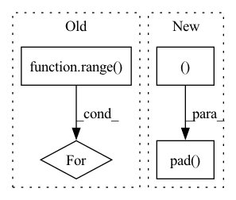

Pattern ID :3704
Before Change
skips = []
skips.append(x)
for idx in range( self.num_stacks):
x = self.encoder[idx](x)
skips.append(x)
for idx in range(self.num_stacks - 1):After Change
padding_left = Pw // 2
padding_right = Pw - padding_left
input = F.pad( input, (padding_left, padding_right, padding_top, padding_bottom ))
x = self.conv2d(input)
x, skip = self.encoder(x)
x = self.bottleneck_conv2d(x)In pattern: SUPERPATTERN
Frequency: 3
Non-data size: 4
Instances Fragment ID: 13940949
Project Name: tky823/dnn-based_source_separation
Commit Name: 8fb5cd5f4f8b4a435d058aef6204904f657abea0
Time: 2021-06-06
Author: 40362510+tky823@users.noreply.github.com
File Name: src/models/d3net.py
M Class Name: D3NetBackbone
N Class Name: D3NetBackbone
M Method Name: forward(2)
N Method Name: forward(2)
M Parent Class: nn.Module
N Parent Class: nn.Module
M File Name: src/models/d3net.py
N File Name: src/models/d3net.py
M Start Line: 206
M End Line: 220
N Start Line: 207
N End Line: 226
Before Change
// sadly, this is faster
x = np.zeros((bs, cin, OY, OX), dtype=tx.dtype)
tx = tx.reshape(bs, oy, ox, cin, H, W)
for Y in range( oy):
for X in range(ox):
x[:, :, Y:Y+H, X:X+W] += tx[:, Y, X]
return x.reshape(bs, cin, OY, OX)After Change
ridx = swizzle_col2im_index(oy, ox, cin, H, W)
// -1 has to be 0s
x = np.pad( tx.reshape(bs, -1), ((0,0),(0,1) )) [:, ridx].sum(axis=2)
// col2im is just im2col in reverse, but np.add.at is SLOW Fragment ID: 13940951
Project Name: geohot/tinygrad
Commit Name: ef24aac09e0b1bd430c138b2c57ede6528facc11
Time: 2020-10-25
Author: geohot@gmail.com
File Name: tinygrad/utils.py
M Class Name: AnonimousClass
N Class Name: AnonimousClass
M Method Name: col2im(5)
N Method Name: col2im(5)
M Parent Class:
N Parent Class:
M File Name: tinygrad/utils.py
N File Name: tinygrad/utils.py
M Start Line: 64
M End Line: 81
N Start Line: 75
N End Line: 80
Before Change
N = num_sample_steps
inv_rho = 1 / rho
for i in range( num_sample_steps):
sigma_i = (sigma_max ** inv_rho + i / (N - 1) * (sigma_min ** inv_rho - sigma_max ** inv_rho)) ** rho
gamma_i = gamma if S_tmin <= sigma_i <= S_tmax else 0.
yield sigma_i, gamma_i
After Change
steps = torch.arange(num_sample_steps, device = self.device, dtype = torch.float32)
sigmas = (self.sigma_max ** inv_rho + steps / (N - 1) * (self.sigma_min ** inv_rho - self.sigma_max ** inv_rho)) ** self.rho
sigmas = F.pad( sigmas, (0, 1 ), value = 0.) // last step is sigma value of 0.
return sigmas
// preconditioned network output Fragment ID: 13940955
Project Name: lucidrains/denoising-diffusion-pytorch
Commit Name: 5db64fec4bc1c34dac5ecdde5d9e6ffdc7b32c97
Time: 2022-06-28
Author: lucidrains@gmail.com
File Name: denoising_diffusion_pytorch/elucidated_diffusion.py
M Class Name: ElucidatedDiffusion
N Class Name: ElucidatedDiffusion
M Method Name: sample_schedule(2)
N Method Name: sample_schedule(2)
M Parent Class: nn.Module
N Parent Class: nn.Module
M File Name: denoising_diffusion_pytorch/elucidated_diffusion.py
N File Name: denoising_diffusion_pytorch/elucidated_diffusion.py
M Start Line: 111
M End Line: 124
N Start Line: 111
N End Line: 120